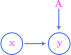
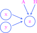
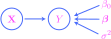
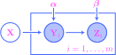
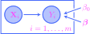
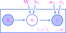
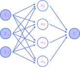
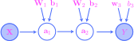

THIS CHAPTER IS CURRENTLY UNDER CONSTRUCTION!!!
12. Probabilistic graphical models#
12.1. A brief look at causal inference#
Suppose that we are given two random variables \(X\) and \(Y\). As we explained in Section 10.3, the two-way flow of “information” and “influence” between the random variables is conceptualized via the Markov kernels
given by the conditional distributions, which are both directly obtainable from the joint distribution of \(X\) and \(Y\). Mathematically, one may reverse the direction of the flow and obtain one Markov kernel from the other via Bayes’ theorem; thus, as long as we have access to the joint distribution, there is no a priori reason to prefer one direction over the other.
But there are very often situations in the real world where one of the directions of flow is more “natural,” or at least easier to conceptualize, due to the two variables occurring in a cause and effect relationship. For example, in the case that \(X\) and \(Y\) are binary variables indicating the presence of a disease (\(X\)) and whether a test for the disease is positive (\(Y\)), we more naturally assume that the flow of influence goes from \(X\) to \(Y\), and not the other way around. Graphically, we might represent the situation as:
{kind=link}
So, the arrow represents more than just the flow of information along the Markov kernel \(x\mapsto p(x|y)\); by drawing \(\rightarrow\) and not the reverse \(\leftarrow\), we indicate that \(X\) is the cause and \(Y\) is the effect.
Continuing with this example, imagine that we’ve collected data
on \(10{,}000\) patients, where \(x_i\) and \(y_i\) indicate if the \(i\)-th patient has the disease and has tested positive for it. Then there is absolutely nothing inherent or intrinsic to the dataset sufficient to determine the directionality of the cause and effect relationship between \(X\) and \(Y\). All the sample-based statistics that we may compute are derived from the empirical mass function, which is just a collection of relative frequencies. These statistics include the empirical correlation coefficient and the empirical mutual information, both of which will certainly be positive—but correlation is not the same as causation, as we are always warned, and so the data by itself tells us nothing about the causal relationship.
For another example, suppose that \(U\) and \(W\) are the proportions of people in a city that use an umbrella on a given day (\(U\)) and run their windshield wipers (\(W\)) on their drive to work. Then certainly \(U\) and \(W\) are positively correlated, but we would be quite skeptical if someone tried to convince us that the cause and effect relationship went like this:
{kind=link}
Indeed, the statistical correlation is not a result of a direct cause and effect relationship between the variables, but rather it is a result of the presence of a confounding variable \(R\), indicating whether it rained on the given day, and which serves as a common cause of both \(U\) and \(W\). Then the proper cause and effect relationships would be indicated by the graph:
{kind=link}
In this situation, the correlation between \(U\) and \(W\) will vanish if we condition on \(R\); this just means that the only way information flows from \(U\) to \(W\) is through \(R\), and if we know what value \(R\) takes, then this flow of information is cut off. So, using the language introduced in Section 10.3, the casual relationships indicated by the graph show that \(U\) and \(W\) are conditionally independent given \(R\). Importantly, this independence would be detectable by observation, via the factorization of the empirical (conditional) joint mass function into the product of the empirical (conditional) marginal mass functions.
But recall from our discussion in Section 10.3 that conditional independence also occurs when the variables are configured in a chain
{kind=link}
with \(R\) serving as a mediating variable rather than a confounding one. Since the only insight obtainable from observed data is independence, the data itself does not express a preference between the first causal structure with \(R\) a confounding variable and the second one with \(R\) a mediator. The causal structure would need to be determined some other way, beyond observation.
We may summarize the discussion in any one of the following ways:
Causal structures and probability.
Relationships of cause and effect represent strictly more structure than a joint probability distribution.
A causal structure refines a joint probability distribution; it encodes more knowledge.
The mapping from causal structures to joint probability distributions is many-to-one.
The very simple types of graphs that we have drawn to represent causal structures are called causal graphs in the literature; they are graphical representations of structural causal models. We will use identical graphs to represent probabilistic graphical models (PGMs) throughout the rest of this book. Essentially, a PGM represents a factorization of a joint probability function into products of conditional and marginal probability functions based on the structure of the underlying graph—but different graphs may represent the same joint distribution and the same factorization. So, strictly speaking, a PGM is more than just a probabilistic object. When we draw its underlying causal graph with arrows pointing one way and not the other, we are indicating what we believe are the “natural” directions of flow of information or influence, or at least just the directed links of communication that we choose to model directly. The links pointing in the opposite directions are modeled indirectly, via Bayes’ theorem.
Problem Prompt
Do problem 1 on the worksheet.
This has been a very (very) short introduction to the ideas of the formal theory of causality, intended only to motivate the causal graphs that we will see over the next few sections. To learn more, see the introductions in Chapter 9 of [HR22] and Chapter 36 of [Mur23]. For a more comprehensive treatment, see [Pea09].
12.2. Probabilistic graphical models#
By way of introduction, let’s begin with two deterministic vectors \(\bx\in \bbr^n\) and \(\by \in \bbr^m\). As we discussed at the beginning of Section 10.3, by saying that there is a deterministic flow of information from \(\bx\) to \(\by\), we shall mean simply that there is a function
called a link function. It will be convenient to depict this situation graphically by representing the variables \(\bx\) and \(\by\) as nodes in a graph and the link function \(g\) as an arrow between them:

Very often, the label \(g\) on the link function will be omitted. In the case that both \(\bx\) and \(\by\) are \(1\)-dimensional, we visualized a deterministic flow like this:
{kind=link}
It could be the case that flow of influence is parametrized. For example, \(g\) might be a linear transformation that is represented by a matrix \(\bA \in \bbr^{m\times n}\), with the entries in the matrix serving as parameters for the flow. We would represent this situation as
{kind=link}
where the parameter matrix is represented by an un-circled node.
For a more complex example, consider the following graph:
{kind=link}
This might represent a link function of the form
which is parametrized by matrices \(\bA \in \bbr^{m\times n}\) and \(\bB \in \bbr^{m\times k}\).
The vectors in our discussion might be random, rather than deterministic, say \(\bX\) and \(\bY\). In this case, a stochastic flow of information from \(\bX\) to \(\bY\) would be visualized just as before:

This flow is represented mathematically via a link function \(\btheta = g(\bx)\) where \(\bx\) is an observed value of \(\bX\) and \(\btheta\) is a parameter that uniquely determines the probability distribution of \(\bY\). So, in this case, an observed value \(\bx\) does not determine a particular observed value \(\by\) of \(Y\), but rather an entire probability distribution over the \(\by\)’s. This probability distribution is conditioned on \(\bX\), so the link function is often specified by giving the functional form of the conditional probability function \(p(\by | \bx)\). In other words, a stochastic flow of information is exactly a Markov kernel (communication channel), as we discussed in Section 10.3:
{kind=link}
In the picture, both \(\bX\) and \(\bY\) are \(1\)-dimensional. Notice that only observed values \(\bx\) of \(\bX\) are used to determine the distribution of \(\bY\) through the link—the distribution of \(\bX\) itself plays no role.
Problem Prompt
Do problem 2 on the worksheet.
These stochastic links might be parametrized. For example, suppose \(\bY\) is \(1\)-dimensional, equal to a random variable \(Y\), while \(\bX\in \mathbb{R}^{n}\) is an \(n\)-dimensional random vector. Then, a particular example of a stochastic link is given by the graph
{kind=link}
The parameters consist of a real number \(\beta_0 \in \bbr\), a vector \(\bbeta \in \bbr^{n}\), and a positive number \(\sigma^2 >0\). A complete description of the link function at \(Y\) is given by
In fact, this is exactly a linear regression model, which we will see again in Section 12.3 below, as well as in Chapters 13 and 18.
We shall take a flow of information of the form
{kind=link}
from a deterministic vector \(\bx\) to a stochastic one \(\bY\) to mean that there is a link function \(\btheta = g(\bx)\) where \(\btheta\) is a parameter that uniquely determines the distribution of \(\bY\). Such a link function is often specified by giving the functional form of the parametrized probability function \(p(\by; \bx)\).
A flow of information of the form

from a random vector \(\bX\) to a deterministic vector \(\by\) means that there is a link function of the form \(\by = g(\bx)\), so that observed values of \(\bX\) uniquely determine values of \(\by\).
The probabilistic graphical models that we will study in this chapter are meant to model real-world datasets. These datasets will often be conceptualized as observations of random or deterministic vectors, and these vectors are then integrated into a graphical model. These vectors are called observed or visible, while all others are called latent or hidden. To visually represent observed vectors in the graph structure, their nodes will be shaded; the nodes associated with hidden vectors are left unshaded. For example, if we draw

then we mean that \(\bX\) is observed while \(\by\) is hidden.
It is important to note that for the simple types of models we consider in this chapter, the datasets consist of observations drawn from the joint distribution across all observed nodes in the model. For example, let’s suppose that we have a graphical structure of the form

with two observed random vectors and one hidden. Then, by saying that \(\bY\) and \(\bZ\) are observed, we mean that we have in possession a pair \((\by, \bz)\) consisting of observed values of \(\bY\) and \(\bZ\).
We may integrate IID random samples into our graphical framework as follows. Suppose that instead of a single copy of the graph above, we have a collection of graphs

one for each \(i=1,\ldots,m\), where the random vector \(\bX\) and the parameters \(\balpha\) and \(\bbeta\) are assumed to be shared across all \(i\). In the case that \(m=3\) (for example), we may assemble all these graphs together into a single large graph
{kind=link}
which explicitly shows that \(\bX\), \(\balpha\), and \(\bbeta\) are shared across all \(i\). Clearly, drawing these types of graphs becomes unwieldy for large \(m\), so analysts have invented a method for depicting repetition in graphs by drawing a rectangle around the portion that is supposed to be duplicated:
{kind=link}
This is called plate notation, where the rectangle is called the plate. The visible nodes in the plate are assumed to be grouped as pairs \((\bY_i,\bZ_i)\), and altogether they form an IID random sample
Problem Prompt
Do problem 3 on the worksheet.
We now have everything that we need to define our version of probabilistic graphical models. After the definition, the remaining sections in this chapter are devoted to the study of particular examples of such models.
Definition 12.1
A probabilistic graphical model (PGM) consists of the following:
A set of vectors, some random and some deterministic, and some marked as observed and all others as hidden.
A graphical structure depicting the vectors as nodes and flows of influence (or information) as arrows between the nodes. If any of these flows are parametrized, then the graphical structure also has (un-circled) nodes for the parameters.
Mathematical descriptions of the flows as (possibly parametrized) link functions.
12.3. Linear regression models#
The type of PGM defined in this section is one of the simplest, but also one of the most important. Its goal is to model an observed dataset
where we believe that
for some parameters \(\beta_0 \in \bbr\) and \(\bbeta \in \bbr^{n}\). For example, let’s consider the Ames housing dataset from the third programming assignment and Chapter 7; it consists of \(m=2{,}930\) bivariate observations
where \(x_i\) and \(y_i\) are the size (in square feet) and selling price (in thousands of US dollars) of the \(i\)-th house in the dataset. A scatter plot of the dataset looks like
Show code cell source
import pandas as pd
import numpy as np
import matplotlib.pyplot as plt
import matplotlib.colors as clr
import matplotlib as mpl
import matplotlib_inline.backend_inline
import seaborn as sns
import scipy as sp
from itertools import product
import warnings
plt.style.use('../aux-files/custom_style_light.mplstyle')
matplotlib_inline.backend_inline.set_matplotlib_formats('svg')
warnings.filterwarnings('ignore')
blue = '#486AFB'
magenta = '#FD46FC'
# linear regression example begins below
# import linear regression model from scikit-learn
from sklearn.linear_model import LinearRegression
# import data
url = 'https://raw.githubusercontent.com/jmyers7/stats-book-materials/main/data/data-3-1.csv'
df = pd.read_csv(url, usecols=['area', 'price'])
# pull out the 'area' column and 'price column from the data and convert them to numpy arrays
X = df['area'].to_numpy().reshape(-1, 1)
y = df['price'].to_numpy()
# instantiate a linear regression model
model = LinearRegression()
# train the model
model.fit(X=X, y=y)
# get the learned parameters
beta, beta_0 = model.coef_, model.intercept_
# build a grid for the regression line
grid = np.linspace(X.min(), X.max())
# plot the regression line
plt.plot(grid, beta * grid + beta_0, color=magenta)
# plot the data
plt.scatter(x=X, y=y, alpha=0.15)
plt.xlabel('area')
plt.ylabel('price')
plt.gcf().set_size_inches(w=5, h=3)
plt.tight_layout()

The positively-sloped line is used to visualize the approximate linear relationship (12.1). This is a so-called least squares line or regression line; we will learn how to compute them in Chapter 13.
But for now, let’s define our first PGM:
Definition 12.2
A linear regression model is a probabilistic graphical model whose underlying graph is of the form

where \(\bX\in \bbr^n\). The model has the following parameters:
A real parameter \(\beta_0\in \mathbb{R}\).
A parameter vector \(\bbeta \in \mathbb{R}^n\).
A positive real parameter \(\sigma^2>0\).
The link function at \(Y\) is given by
Before we introduce important terminology associated with linear regression models and look at an example, we need to discuss two probability functions that will play a crucial role in the next chapter. The first is just the conditional probability function of \(Y\) given \(\bX\):
Definition 12.3
The model probability function for a linear regression model is the conditional probability function
On its support consisting of all \(y\in \bbr\) and \(\bx \in \bbr^n\), it is given by the formula
where \(\mu = \beta_0 + \bx^\intercal \bbeta\).
The second important probability function associated with a linear regression model is derived from an observed dataset
We assume that the dataset is an observation of an IID random sample
which fits into a plated version of a linear regression model:
{kind=link}
The conditional probability function of the \(y\)’s given the \(\bx\)’s is given a new name:
Theorem 12.1 (Data probability functions of linear regression models)
Given an observed dataset
the data probability function for a linear regression model is the conditional probability function
It is given by
where \(\mu_i = \beta_0 + \bx_i^\intercal \bbeta\) for each \(i=1,\ldots,m\).
Notice that the density in the last displayed equation is exactly the density of an \(\mathcal{N}_m(\bmu,\Sigma)\) distribution, where \(\Sigma = \sigma^2 \bI\) and the mean vector
Let’s prove the theorem:
Proof. We shall only prove the equation
where, for ease of notation, we’ve omitted all parameters. By independence of the random sample
and and the “vectorized” version of Theorem 7.7, we have
But the sequence
is independent as well (see Corollary 7.1), and so
But then
which is exactly what we wanted to prove. Q.E.D.
Notice that the proof of the equation
used nothing particular about linear regression models, and only relied upon independence of the random sample. This means that this same argument will apply to the data probability functions of the models that we will study in subsequent sections.
Returning to our discussion of the linear regression model, the components of the vector \(\bX\) are referred to as predictors, regressors, explanatory variables, or independent variables, while the random variable \(Y\) is called the response variable or the dependent variable. In the case that \(m=1\), the model is called a simple linear regression model; otherwise, it is called a multiple linear regression model.
Note that
and so a linear regression model assumes (among other things) that the conditional mean of the response variable is linearly related to the regressors through the link function
The parameter \(\beta_0\) is often called the intercept or bias term, while the other \(\beta_j\)’s (for \(j>0\)) are called weights or slope coefficients since they are exactly the (infinitesimal) slopes:
The random variable
in a linear regression model is called the error term; note then that
This is the manifestation in terms of random vectors and variables of the approximate linear relationship (12.1) described at the beginning of this section.
Suppose we are given an observed dataset
If for each \(i=1,\ldots,m\), we define the predicted values
and the residuals
then from (12.3) we get
This shows that the residuals \(\dev_i\) are observations of the error term \(\dev \sim \mathcal{N}(0,\sigma^2)\). Thus, in a linear regression model, all residuals from a dataset are assumed to be modeled by a normal distribution with mean \(0\) and a fixed variance; the fixed-variance assumption is sometimes called homoscedasticity.
In Chapter 13, we will learn how to train a linear regression model on a dataset to obtain optimal values of the parameters \(\beta_0\) and \(\bbeta\). Using these training methods, we obtained values for the parameters \(\beta_0\) and \(\bbeta = \beta_1\) for the Ames housing dataset mentioned at the beginning of this section. The positively-sloped line in the scatter plot at the beginning of this section was the line traced out by the link function \(\mu = \beta_0 + x\beta_1 \). The predicted values \(\hat{y}_i\) lie along this line, and the magnitude of the residual \(\dev_i\) may be visualized as the vertical distance from the true data point \(y_i\) to this line. We may plot the residuals \(\dev_i\) against the predictor variables \(x_i\) to get:
Show code cell source
# get the predictions
y_hat = model.predict(X=X)
# get the residuals
resid = y - y_hat
# plot the residuals vs. area
plt.scatter(x=X, y=resid, alpha=0.20)
plt.xlabel('area')
plt.ylabel('residuals')
plt.gcf().set_size_inches(w=5, h=3)
plt.tight_layout()

It is evident from this plot that the homoscedasticity assumption is violated since the distributions of the residuals appear to widen as the area variable increases.
As with the parameters \(\beta_0\) and \(\bbeta\), it is also possible to learn an optimal value of the variance \(\sigma^2\). As another method of model checking, given all the learned parameters \(\beta_0\), \(\beta_1\), and \(\sigma^2\) for the Ames dataset, we may generate a new dataset by sampling from the normal distributions \(\mathcal{N}\big(\hat{y}_i, \sigma^2\big)\) for each \(i=1,\ldots,m\). A scatter plot of one simulated dataset is on the left in the following figure, while a KDE of the simulated dataset is compared against the “true” KDE on the right:
Show code cell source
# import statsmodels
import statsmodels.formula.api as smf
# instantiate and train a linear regression model from statsmodels
model = smf.ols(formula='price ~ area', data=df).fit()
# get the learned standard deviation
sigma = np.sqrt(model.scale)
# generate the dataset
np.random.seed(42)
y_gen = sp.stats.norm(loc=y_hat, scale=sigma).rvs(2930)
df_gen = pd.DataFrame({'area': df['area'], 'price': y_gen})
df['indicator'] = 'true data PDF'
df_gen['indicator'] = 'simulated data PDF'
df_combined = pd.concat(objs=[df, df_gen], axis=0)
# setup the figure
_, axes = plt.subplots(ncols=3, figsize=(15, 4), sharex=True, sharey=True)
# plot the dataset
sns.scatterplot(data=df_gen, x='area', y='price', alpha=0.15, ax=axes[0])
# plot the original regression line
axes[0].plot(grid, beta_0 + beta * grid, color=magenta)
axes[0].set_title('simulated dataset')
# plot the true data
axes[1].plot(grid, beta * grid + beta_0, color=magenta)
axes[1].scatter(x=X, y=y, alpha=0.15)
axes[1].set_title('true data')
# plot the KDEs
g = sns.kdeplot(data=df_combined, x='area', y='price', hue='indicator', levels=6, ax=axes[2])
g.get_legend().set_title(None)
axes[2].set_title('comparison of simulated to true data')
plt.tight_layout()

For smaller values of area, the distribution of the true prices is narrower compared to the simulated prices, while for larger values of area, the distribution of the true prices is wider.
12.4. Logistic regression models#
The types of models studied in this section are closely related to the linear regression models in the previous, but here the goal is to model a dataset of the form
Such datasets arise naturally in binary classification problems, where we aim to determine which of two classes a given object lies in based on predictor features. The true class of the \(i\)-th object is indicated by the value of \(y_i\), while the vector \(\bx_i\) consists of the predictor features.
As a running example through this section, consider the data given in following scatter plot:
Show code cell source
# import scaler from scikit-learn
from sklearn.preprocessing import StandardScaler
# import the data
url = 'https://raw.githubusercontent.com/jmyers7/stats-book-materials/main/data/ch10-book-data-01.csv'
df = pd.read_csv(url)
# convert the data to numpy arrays
X = df[['x_1', 'x_2']].to_numpy()
y = df['y'].to_numpy()
# scale the input data
ss = StandardScaler()
X = ss.fit_transform(X=X)
# replaced the columns of the dataframe with the transformed data
df['x_1'] = X[:, 0]
df['x_2'] = X[:, 1]
# plot the data
g = sns.scatterplot(data=df, x='x_1', y='x_2', hue='y')
# change the default seaborn legend
g.legend_.set_title(None)
new_labels = ['class 0', 'class 1']
for t, l in zip(g.legend_.texts, new_labels):
t.set_text(l)
plt.xlabel('$x_1$')
plt.ylabel('$x_2$')
plt.gcf().set_size_inches(w=5, h=3)
plt.tight_layout()

The points represent the \(2\)-dimensional predictors
while the color indicates the class \(y_i \in \{0,1\}\). Our goal in this section is to capture the evident pattern in the data using a logistic regression model.
To define these models, we first need to discuss the important sigmoid function, defined as
Its graph is:
Show code cell source
import torch
import torch.nn.functional as F
grid = torch.linspace(start=-10, end=10, steps=300)
plt.plot(grid, F.sigmoid(grid))
plt.gcf().set_size_inches(w=5, h=3)
plt.xlabel('$x$')
plt.ylabel('$\sigma(x)$')
plt.tight_layout()

Since the outputs of the sigmoid function land in the open interval \((0,1)\), we may use it to convert any real number into a probability. Indeed, this is precisely its role in a logistic regression model:
Definition 12.4
A logistic regression model is a probabilistic graphical model whose underlying graph is of the form

where \(\bX\in \bbr^{n}\). The model has the following parameters:
A real parameter \(\beta_0\in \mathbb{R}\).
A parameter vector \(\bbeta \in \mathbb{R}^{n}\).
The link function at \(Y\) is given by
and where \(\sigma\) is the sigmoid function.
Notice that the link function \(\phi = \sigma(\beta_0 + \bx^\intercal\bbeta )\) in a logistic regression model is precisely the affine link function \(\mu = \beta_0 + \bx^\intercal \bbeta\) of a linear regression model composed with the sigmoid function.
We describe the two probability functions that we will use to train logistic regression models in the next chapter. The first is the conditional probability function:
Definition 12.5
The model probability function for a logistic regression model is the conditional probability function
On its support consisting of all \(y\in \{0,1\}\) and \(\bx \in \bbr^{n}\), it is given by the formula
where \(\phi = \sigma(\beta_0 + \bx^\intercal \bbeta )\).
The second important probability function is obtained from an observation of an IID random sample
corresponding to a plated version of a logistic regression model
{kind=link}
just as in the run-up to Theorem 12.1 in the previous section.
Theorem 12.2 (Data probability functions of logistic regression models)
Given a dataset
the data probability function for a logistic regression model is the conditional probability function
It is given by
where \(\phi_i = \sigma (\beta_0 + \bx_i^\intercal \bbeta )\) for each \(i=1,\ldots,m\).
To prove the theorem, we would only need to establish the equality
But the same proof will work here as the one given for Theorem 12.1.
Let’s return to our toy dataset introduced at the beginning of the section. In the next chapter we will see how to learn optimal values of the parameters \(\beta_0\) and \(\bbeta\) from data. With these parameters in hand obtained from our toy dataset, one way to check how well a logistic regression model captures the data is to draw a contour plot of the function \(\phi = \sigma( \beta_0 + \bx^\intercal \bbeta )\). This contour plot appears on the left in the following:
Show code cell source
# import logistic regression model from scikit-learn
from sklearn.linear_model import LogisticRegression
# instantiate a logistic regression model
model = LogisticRegression()
# train the model
model.fit(X=X, y=y)
# get the grid for the contour plot
resolution = 1000
x_1 = (-2, 2)
x_2 = (-3.5, 3.5)
x1_grid, x2_grid = torch.meshgrid(torch.linspace(*x_1, resolution), torch.linspace(*x_2, resolution))
grid = torch.column_stack((x1_grid.reshape((resolution ** 2, -1)), x2_grid.reshape((resolution ** 2, -1))))
# define colormaps for the contour plots
desat_blue = '#7F93FF'
desat_magenta = '#FF7CFE'
diverging_cmap = clr.LinearSegmentedColormap.from_list(name='diverging', colors=[desat_blue, 'white', desat_magenta], N=10)
binary_cmap = clr.LinearSegmentedColormap.from_list(name='binary', colors=[desat_blue, desat_magenta], N=2)
_, axes = plt.subplots(ncols=3, figsize=(10, 3), width_ratios=[10, 10, 1])
# generate the contour plots
z = model.predict_proba(grid)[:, 1]
z = z.reshape(resolution, resolution)
axes[0].contourf(x1_grid, x2_grid, z, cmap=diverging_cmap, levels=diverging_cmap.N)
z = model.predict(grid)
z = z.reshape(resolution, resolution)
axes[1].contourf(x1_grid, x2_grid, z, cmap=binary_cmap, levels=binary_cmap.N)
# create the colorbar
plt.colorbar(mpl.cm.ScalarMappable(cmap=diverging_cmap), cax=axes[2], orientation='vertical')
# plot the data
for axis in axes[:-1]:
sns.scatterplot(data=df, x='x_1', y='x_2', hue='y', ax=axis, legend=False)
axis.set_xlabel('$x_1$')
axis.set_ylabel('$x_2$')
axes[0].set_title('contour plot of $\\phi = \\sigma(\\beta_0 + \\boldsymbol{\\beta}^\\intercal \\mathbf{x})$')
axes[1].set_title('contour plot of predictor function $f(\mathbf{x})$')
plt.tight_layout()

To interpret this plot, remember that \(\phi = \sigma( \beta_0 + \bx^\intercal \bbeta )\) is the probability parameter for the class indicator variable \(Y \sim \Ber(\phi)\), so we should interpret \(\phi\) as the probability that the point \(\bx\) is in class \(1\) (corresponding to \(y=1\)). In the right-hand plot, we have “thresholded” the probability \(\phi\) at \(0.5\), creating a predictor function
The decision boundary is exactly the curve in \(\bbr^2\) consisting of those \(\bx\) for which the predictor \(f\) is “flipping a coin,” i.e., it consists of those points \(\bx\) such that
which is equivalent to
Notice that this defines a linear decision boundary that separates \(\bbr^2\) into two unbounded half planes based on whether
Those vectors \(\bx\) satisfying the first inequality would be predicted to belong to class \(1\), while those satisfying the latter inequality would be predicted to belong to class \(0\). As is evident from the plots, our logistic regression model is doing its best to accurately classify as many data points as possible, but our model is handicapped by the fact it will always produce a linear decision boundary.
12.5. Neural network models#
The desire to obtain nonlinear decision boundaries is (in part) the motivation for the probabilistic graphical models studied in this section, called neural networks. While there are many (many!) different types of neural network architectures in current use, the particular type that we shall begin our study with are fully-connected, feedforward neural networks with one hidden layer.
Essentially, these types of neural networks are logistic regression models with a hidden deterministic node \(\bz\) sandwiched between the predictor features \(\bX\) and the response variable \(Y\). The link from \(\bz\) to \(Y\) goes through the same sigmoid function used in the definition of logistic regression models, but the link from \(\bX\) to \(\bz\) goes through a function called the rectified linear unit (ReLU), defined as
The ReLU function is piecewise linear, with a graph of the form:
Show code cell source
relu_grid = torch.linspace(start=-2, end=2, steps=200)
plt.plot(relu_grid, F.relu(relu_grid))
plt.gcf().set_size_inches(w=5, h=3)
plt.xlabel('$x$')
plt.ylabel('$\\rho(x)$')
plt.tight_layout()

We may apply the ReLU function to vectors \(\bx\in \bbr^{n}\) by “vectorization” (in Pythonic language), which just means that we apply it componentwise:
Using these pieces, we now state the official definition in the case that the neural network has one hidden layer; later, we shall indicate how one obtains “deeper” neural networks by adding additional hidden layers.
Definition 12.6
A (fully-connected, feedforward) neural network with one hidden layer is a probabilistic graphical model whose underlying graph is of the form

where \(\bX\in \bbr^n\) and \(\bz \in \bbr^k\). The model has the following parameters:
A parameter matrix \(\bW_1 \in \mathbb{R}^{n\times k}\).
A parameter vector \(\bb_1 \in \mathbb{R}^{k}\).
A parameter vector \(\bw_2 \in \mathbb{R}^{k}\).
A real parameter \(b_2 \in \mathbb{R}\).
The link function at \(\mathbf{z}\) is given by
while the link function at \(Y\) is given by
Here, \(\rho\) is the ReLU function and \(\sigma\) is the sigmoid function.
As the proliferation of transposes indicates, the formulas for the link functions given here express a preference for row vectors rather than column vectors. This is, in part, because some of us are psychologically conditioned (including the author) to think of a feature vector of a single example as a row vector rather than a column vector, much as we see in data frames in Python. But by applying the transpose operation to each side of the equations defining the link functions, we obtain formulas that are more in line with what the reader might see in other references:
The name “neural network” comes from a loose analogy with networks of biological neurons in the human brain. For this reason, sometimes neural network models are called artificial neural networks (ANNs). The parameters \(\bW_1\) and \(\bw_2\) are called weights, while the parameters \(\bb_1\) and \(b_2\) are called biases. The ReLU function \(\rho\) and the sigmoid function \(\sigma\) are often called the activation functions of the network.
Following the pattern begun with linear and logistic regression models, we want to begin by describing the probability functions that we will use in the next chapter to train neural network models. The first is the conditional probability function:
Definition 12.7
The model probability function for a neural network model is the conditional probability function
On its support consisting of all \(y\in \{0,1\}\) and \(\bx \in \bbr^{m}\), it is given by the formula
where \(\phi = \sigma(\bz^\intercal \bw_2 + b_2)\) and \(\bz^\intercal = \rho(\bx ^\intercal \bW_1 + \bb_1^\intercal)\).
As with linear and logistic regression models, the second probability function is obtained from an IID random sample
corresponding to a plated version of a neural network model:
{kind=link}
This probability function is described in:
Theorem 12.3 (Data probability functions of neural network models)
Given a dataset
the data probability function for a neural network model is the conditional probability function
It is given by
where \(\phi_i = \sigma(\bz_i^\intercal \bw_2 + b_2)\) and \(\bz_i = \rho(\bx_i^\intercal \bW_1 + \bb_1)\) for each \(i=1,\ldots,m\).
The proof of the equality
in the theorem is the same as the proof of the same equality in Theorem 12.1.
Very often, one sees the underlying graph of a neural network displayed in terms of the components of the vectors (with the parameters omitted). For example, in the case that \(\bX\) is \(3\)-dimensional and \(\bz\) is \(4\)-dimensional, we might see the graph of the neural network drawn as
{kind=link}
In this format, the nodes are often called (artificial) neurons or units. The visible neurons \(X_1,X_2,X_3\) are said to comprise the input layer of the network, the hidden neurons \(z_1,z_2,z_3,z_4\) make up a hidden layer, and the single visible neuron \(Y\) makes up the output layer. The network is called fully-connected because there is a link function at a given neuron from every neuron in the previous layer and to every neuron in the subsequent layer; it is called a feedfoward network because the link functions only go in one direction, with no feedback loops. The link function at \(z_j\) is of the form
where
Thus, each hidden neuron processes information by first computing an affine combination of the input features \(\bx\) (i.e., a weighted sum plus a bias term), and then applies the activation function \(\rho\) to the result.
From our networks with just one hidden layer, it is easy to imagine how we might obtain “deeper” networks by adding additional hidden layers; for example, a network with two hidden layers might look like this:
{kind=link}
where
If we collapse the neurons into vectors and bring in the parameters, this network would be drawn as
{kind=link}
The link functions at \(\bz_1\) and \(\bz_2\) are given by
while the link function at \(Y\) is the same as it was before:
The depth \(d\) of a neural network is defined to be one less than the total number of layers, or equivalently, the number of (trainable) parameter groups
The widths of a network are defined to be the dimensions of the hidden vectors.
Let’s return to our toy dataset from the previous section, but for extra fun let’s add four “blobs” of data:
Show code cell source
url = 'https://raw.githubusercontent.com/jmyers7/stats-book-materials/main/data/ch10-book-data-03.csv'
df = pd.read_csv(url)
# convert the data to numpy arrays
X = df[['x_1', 'x_2']].to_numpy()
y = df['y'].to_numpy()
# scale the input data
ss = StandardScaler()
X = ss.fit_transform(X=X)
# replaced the columns of the dataframe with the transformed data
df['x_1'] = X[:, 0]
df['x_2'] = X[:, 1]
# convert the data to torch tensors
X = torch.tensor(data=X, dtype=torch.float32)
y = torch.tensor(data=y, dtype=torch.float32)
# plot the data
g = sns.scatterplot(data=df, x='x_1', y='x_2', hue='y')
# change the default seaborn legend
g.legend_.set_title(None)
new_labels = ['class 0', 'class 1']
for t, k2 in zip(g.legend_.texts, new_labels):
t.set_text(k2)
plt.xlabel('$x_1$')
plt.ylabel('$x_2$')
plt.gcf().set_size_inches(w=5, h=3)
plt.tight_layout()

Trained on the original dataset (without the “blobs”), we saw that a logistic regression model produces a linear decision boundary and thus misclassifies a nontrivial number of data points. In comparison, not only will a neural network produce a nonlinear decision boundary dividing the data in the original dataset, it will also correctly classify the data in the four new “blobs.” Indeed, using the techniques in the next chapter, we trained a neural network on the new dataset with three hidden layers of widths \(8\), \(8\), and \(4\). Then, a contour plot of the function
appears on the left-hand side of the following figure, while the “thresholded” version (at \(0.5\)) appears on the right-hand side displaying the (nonlinear!) decision boundaries:
Show code cell source
import torch.nn as nn
# define the neural network model architecture
torch.manual_seed(42)
k1 = 8 # width of first hidden layer
k2 = 8 # width of second hidden layer
k3 = 4 # width of third hidden layer
class NeuralNetwork(nn.Module):
def __init__(self, input_dimension):
super().__init__()
# three hidden layers...
self.hidden1_linear = nn.Linear(in_features=input_dimension, out_features=k1)
self.hidden1_act = nn.ReLU()
self.hidden2_linear = nn.Linear(in_features=k1, out_features=k2)
self.hidden2_act = nn.ReLU()
self.hidden3_linear = nn.Linear(in_features=k2, out_features=k3)
self.hidden3_act = nn.ReLU()
# ...and one output layer
self.output_linear = nn.Linear(in_features=k3, out_features=1)
self.output_act = nn.Sigmoid()
def forward(self, X):
X = self.hidden1_act(self.hidden1_linear(X))
hidden_output_1 = X
X = self.hidden2_act(self.hidden2_linear(X))
hidden_output_2 = X
X = self.hidden3_act(self.hidden3_linear(X))
hidden_output_3 = X
X = self.output_act(self.output_linear(X))
return X, hidden_output_1, hidden_output_2, hidden_output_3
model = NeuralNetwork(input_dimension=2)
# define the loss function and optimizer
loss_fn = torch.nn.BCELoss()
optimizer = torch.optim.SGD(params=model.parameters(), lr=5e-1)
# train the model
num_epochs = 4000
for _ in range(num_epochs):
optimizer.zero_grad()
y_hat = model(X)[0]
loss = loss_fn(y_hat.squeeze(), y)
loss.backward()
optimizer.step()
_, axes = plt.subplots(ncols=3, figsize=(10, 4), width_ratios=[10, 10, 1])
# get the grid for the contour plot
resolution = 1000
x1_grid = torch.linspace(-1.75, 1.75, resolution)
x2_grid = torch.linspace(-1.5, 1.5, resolution)
x1_grid, x2_grid = torch.meshgrid(x1_grid, x2_grid)
grid = torch.column_stack((x1_grid.reshape((resolution ** 2, -1)), x2_grid.reshape((resolution ** 2, -1))))
# generate the contour plots
grid_outputs = model(grid)
z = grid_outputs[0].detach()
z = z.reshape(resolution, resolution)
axes[0].contourf(x1_grid, x2_grid, z, cmap=diverging_cmap, levels=diverging_cmap.N)
z = grid_outputs[0] >= 0.5
z = z.reshape(resolution, resolution)
axes[1].contourf(x1_grid, x2_grid, z, cmap=binary_cmap, levels=binary_cmap.N)
# create the colorbar
plt.colorbar(mpl.cm.ScalarMappable(cmap=diverging_cmap), cax=axes[2], orientation='vertical')
# plot the data
for axis in axes[:-1]:
sns.scatterplot(data=df, x='x_1', y='x_2', hue='y', ax=axis, legend=False)
axis.set_xlabel('$x_1$')
axis.set_ylabel('$x_2$')
axes[0].set_title('contour plot of $\\phi = \\sigma(\\mathbf{z}_3^\\intercal \\boldsymbol{w}_4 + b_4)$')
axes[1].set_title('contour plot of predictor function $f(\mathbf{x})$')
plt.tight_layout()

Notice that the band of white dividing the original dataset (representing values \(\phi \approx 0.5\)) in the left-hand plot is much narrower compared to the same plot for the logistic regression model. This indicates that the neural network is making much more confident predictions up to its decision boundary (displayed in the right-hand plot) compared to the logistic regression model.
One of the major differences between neural networks and models like linear and logistic regression is that all variables in the latter types are visible, while neural networks contain layers of hidden variables sandwiched between the visible ones. This presents the analyst with a problem of understanding and interpretability: What exactly are the hidden neurons doing in a neural network model, and how might we interpret their output in human-understandable ways?
Answers to these questions that are simultaneously broad enough to cover many use cases, while narrow enough to actually say something specific and meaningful, are very difficult to come by—indeed, this is an active area of research in machine learning. But generally speaking, it is often useful to think of the hierarchy of layers in a neural network—beginning from the input layer, progressing through the hidden layers to the output layer—as a hierarchy of representations progressing from the broad and general to the specific and refined. Here, by a representation, we mean an encoding of some real-world object or concept as a finite-dimensional vector of numerical features. For an example, consider a cat sitting on a chair—how might we represent this scene as a vector of numerical features understandable by a computer? One way is to take a picture of the cat with a digital camera, which encodes the scene into a digital picture consisting of an \(m\times n\) rectangular grid of pixels. The color of each pixel is uniquely identified by an RGB triplet \((r,g,b)\), where the components are numbers that specify how much red, green, and blue are needed to form the color. Thus, the cat may be encoded into a feature vector which is actually a \(3\)-dimensional tensor of size \(m\times n \times 3\). This is a representation of the scene.
{kind=link}
For another example, consider our familiar Ames housing dataset. The numerical features in this dataset comprise a representation of the housing market in Ames, Iowa. The dataset is not literally the housing market, just as the digital picture that I see on my screen of my cat sitting on a chair is not literally my cat! So, it is important to understand that the datasets we deal with in the real world are all representations, in this sense. And which numerical features to include in a given dataset is often decided by a human based on many factors—the features are identified and extracted from the real world by hand, as they say. As such, these features are often understandable and interpretable by a human since they clearly map onto real-world, tangible things.
Now, suppose that \(\bx\) is an input feature vector to a neural network. On its way through the network, it begins by landing in the first hidden layer, transforming into the vector
We think of \(\bz_1\) as another representation of the data, but the meaning of its components—the “activations of the neurons”—are difficult to interpret because the weight matrix \(\bW_1\) and bias vector \(\bb_1\) are learned through the (usually very opaque) training process (see Chapter 13). Then, this new feature vector \(\bz_1\) is passed into the second layer, creating yet another new representation
of the data. For a network of depth \(d\), this process of iteratively creating new representations of the data based on the previous ones continues all the way to the vector \(\bz_{d-1}\) in the last hidden layer, which is then used to create the probability
that parametrizes the distribution of the random variable \(Y\sim \Ber(\phi)\) in the output layer. So, the end result of the “forward pass” through the network is a sequence of representations
of the data, beginning with the (often human constructed) feature vector \(\bx\). As we mentioned above, one can often think of this sequence of representations as a progression from the broad and general, to the specific and refined. For example, the following contour plots show the activations of the eight neurons in the first hidden layer of our network trained to classify the data in our toy example:
Show code cell source
fig = plt.figure(constrained_layout=True, figsize=(14, 5))
subfigs = fig.subfigures(ncols=2, nrows=1, width_ratios=[18, 1])
light_cmap = clr.LinearSegmentedColormap.from_list(name='light', colors=['white', magenta], N=16)
# hidden layer 1, with 8 neurons
subfig = subfigs[0]
subfig.suptitle(f'neurons in hidden layer 1')
axes = subfig.subplots(nrows=2, ncols=4, sharex=True, sharey=True)
for j, axis in enumerate(axes.flatten()):
z = grid_outputs[1][:, j].detach().numpy()
z = z.reshape(resolution, resolution)
contour = axis.contourf(x1_grid, x2_grid, z, cmap=light_cmap, levels=light_cmap.N, vmin=0, vmax=3)
sns.scatterplot(data=df, x='x_1', y='x_2', hue='y', ax=axis, legend=False, zorder=3)
axis.set_title(f'neuron {j + 1}')
axis.set_xlabel('$x_1$')
axis.set_ylabel('$x_2$')
# plot the colorbar
subfig = subfigs[1]
axis = subfig.subplots()
cbar = subfig.colorbar(mpl.cm.ScalarMappable(cmap=light_cmap), cax=axis, orientation='vertical')
cbar.set_ticklabels([round(3 / 5 * k, 1) for k in range(5)] + ['>5.0'])

Specifically, these plots show the contours of the functions
for each \(j=1,\ldots,8\), where
We see from the plots that the neurons are active on half planes of parameter space—their activations are not highlighting specific, refined structures in the data, but rather broad structures. The components in the representation \(\bz_1\) indicate what combination of these half planes the given data point lies in; a larger number for a component indicates that the point is further away from the boundary of the half planes. This new representation \(\bz_1\) is then passed into the second hidden layer, revealing these activations:
Show code cell source
fig = plt.figure(constrained_layout=True, figsize=(14, 5))
subfigs = fig.subfigures(ncols=2, nrows=1, width_ratios=[18, 1])
light_cmap = clr.LinearSegmentedColormap.from_list(name='light', colors=['white', magenta], N=16)
# hidden layer 2, with 8 neurons
subfig = subfigs[0]
subfig.suptitle(f'neurons in hidden layer 2')
axes = subfig.subplots(nrows=2, ncols=4, sharex=True, sharey=True)
for j, axis in enumerate(axes.flatten()):
z = grid_outputs[2][:, j].detach().numpy()
z = z.reshape(resolution, resolution)
contour = axis.contourf(x1_grid, x2_grid, z, cmap=light_cmap, levels=light_cmap.N, vmin=0, vmax=3)
sns.scatterplot(data=df, x='x_1', y='x_2', hue='y', ax=axis, legend=False, zorder=3)
axis.set_title(f'neuron {j + 1}')
axis.set_xlabel('$x_1$')
axis.set_ylabel('$x_2$')
# plot the colorbar
subfig = subfigs[1]
axis = subfig.subplots()
cbar = subfig.colorbar(mpl.cm.ScalarMappable(cmap=light_cmap), cax=axis, orientation='vertical')
cbar.set_ticklabels([round(3 / 5 * k, 1) for k in range(5)] + ['>5.0'])

These are contour plots of the functions
for each \(j=1,\ldots,8\), where
In comparison to the broad activations of the neurons in the first layer, these activations are starting to take on a more refined structure, with some of the activation boundaries beginning to conform to the shape of the data. This second representation \(\bz_2\) is passed into the third and final hidden layer, revealing the following activations:
Show code cell source
fig = plt.figure(constrained_layout=True, figsize=(14, 3))
subfigs = fig.subfigures(ncols=2, nrows=1, width_ratios=[18, 1])
light_cmap = clr.LinearSegmentedColormap.from_list(name='light', colors=['white', magenta], N=16)
# hidden layer 3, with 4 neurons
subfig = subfigs[0]
subfig.suptitle(f'neurons in hidden layer 3')
axes = subfig.subplots(nrows=1, ncols=4, sharex=True, sharey=True)
for j, axis in enumerate(axes.flatten()):
z = grid_outputs[3][:, j].detach().numpy()
z = z.reshape(resolution, resolution)
contour = axis.contourf(x1_grid, x2_grid, z, cmap=light_cmap, levels=light_cmap.N, vmin=0, vmax=3)
sns.scatterplot(data=df, x='x_1', y='x_2', hue='y', ax=axis, legend=False, zorder=3)
axis.set_title(f'neuron {j + 1}')
axis.set_xlabel('$x_1$')
axis.set_ylabel('$x_2$')
# plot the colorbar
subfig = subfigs[1]
axis = subfig.subplots()
cbar = subfig.colorbar(mpl.cm.ScalarMappable(cmap=light_cmap), cax=axis, orientation='vertical')
cbar.set_ticklabels([round(3 / 5 * k, 1) for k in range(5)] + ['>5.0'])

These are contour plots of the functions
for each \(j=1,\ldots,4\), where
The shapes of these activations are even more refined than those in the previous hidden layer, taking on more of the shape of the data. The job of the final link function
is to combine these activations to produce an output probability \(\phi\). Interestingly, the second and fourth neurons appear to be inactive, at least in the region of parameter space containing the dataset. One might “prune” inactive neurons from the network after training, but care must be exercised in “pruning” before training. Indeed, even if a neuron is ultimately inactive in the trained network, it may play a nontrivial role during training, and the effect of its removal is, in general, difficult to estimate.